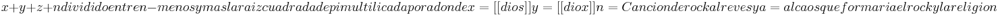

Teoría del Caos
 De: La Frikipedia, la enciclopedia extremadamente seria.
De: La Frikipedia, la enciclopedia extremadamente seria.
«Una mariposa aletea sus alas, al otro lado del planeta hay un huracán»
~ Teoría del Caos el efecto mariposón
Una teoría un poco caótica, nada más que por su nombre.
Esta explica, bueno, que hagamos lo que hagamos, al final arrasaremos un bosque... o mataremos a alguien... o legalizaremos la marihuana...
Historia
Esta teoría se le ocurrió nada más ni nada menos que... a krusher (De hecho lo invento John Travolta pero puse que krusher por que soy un lame botas
El decia que si tocabas una cancion de rock al reves en una iglesia aparecen linchan
También hay otros ejemplos...
- Un conejo (no pensemos mal...), y un perro.
- Están discutiendo sobre como comerse al conejo, y como huir del perro.
- El dueño del perro está hasta los cojones de la discusión y mata a los dos.
- Acaba de extinguir 2 especies en peligro de extinción. Le da igual, solo le importa que gane el barça en las champions.
- Pero lo que no sabe es que al matar a esos dos animalitos, ha desarrollado una serie de consecuencias que le llevará a la muerte... el perro se está pudriendo, una mosca se posa sobre él, le shupa la sangre, se posa en el dueño, le pica y le transmite bien sabe dios el que al dueño, este a los pocos días empieza a ladrar, y después la palma...
Y todo por que el conejo se comió el paquete de chou-chou del perro.
Conclusiones lógicas de la teoría
- Hagas lo que hagas, la jodes.
- Y la jodes bien, bien, ¿eh?
- Nos jodes a todos.
- A tí el primero... bueno depende.
- John Travolta la inventó.
- Si se aporrea un árbol, este explotará.
- Una ficha de dominó puede mover el mundo, y 10.000.000 fichas más.
- No tiene nada que ver con el efecto dominó.
- Chuck se aburría y se dedicó a pegarles patads giratorias a los árboles.
- Una astilla explotará, sea como sea.
- El caos siempre está ahí, es inevitable.
- Si interfieres. morirás.
- No confundir Caos, con Cola-caos.
- Al principio ni te enterás.
- Puedes extinguir una especie entera sin enterarte.
- Si vas al pasado y mueves o tocas o matas algo, tendrá su efecto en el futuro.
- Hay universos paralelos.
- Y para lelas.
- No estamos solos.
- Yo ahora si...
- El caos es irremediablemente caótico en todas sus facetas inexplicables.
- Si ahoras tiras una bolita de golf por la ventana, podrías hacer enfadar al gran Chuck.
- Solo Chuck puede practicar esta arte, el arte del Caoticismo.
- No hay 2 sin 3.
- Puede que sea cierto, pero si no lo es, sería un poco extraño, ¿no?
- Existe el Caos, ¿sin Caos?
- ¿A que viene lo de la mariposa?
- Si un emo se corta las venas, ahí si que no pasa nada, porque, ¿a quién le importa?
- Si modificas el orden de "caos" puedes formar "ocas", luegos las ocas traen el caos.
- Y ocas al revés es saco, luego el hombre del saco también trae el caos.
- ¿Qué?
Como John Travolta penso en esa teoria
John Travolta penmso en esta idea cuando un dia que estaba cagando empezo a hacer esta simple operacion matematica
Autor(es):
- Frikiman
- Loumalou
- Viento
- Khazike Khashondo
- El Xarlie
- Fedeloko
- Mad Max
- MR.sandman
- Axelaxel12
- Roasch7
Frikipedia 2005-2016, Licencia
GFDL 1.2 - Extraído por FrikiLeaks